Introducción a Git y GitHub
Brais Arias Rio
(profesor en prácticas)
Liceo La Paz
https://braisarias.github.io/liceointernship-git-lessons/

Quien soy?
Ingeniero informático
Consultor de software libre / SysAdmin en iCarto
Oficina de Software Libre de la AMTEGA (Xunta)
Mancomún Podcast
Asociacionismo: GPUL - KDE España
(Ahora) también estudio Русский язык (ruso)
Sobre Git
- Sistema de Contol de Versiones / VCS (Version Control System)
- Sistema de Contol de Versiones Distribuido / DVCS (Distributed Version Control System)
- Escrito inicialmente en C por Linus Torvals
- Usado en el desarrollo del kernel de Linux
- Uno de los VCS más usados
- https://git-scm.com/
Forjas / Repositorios de código
Conceptos básicos
Porque usar un VCS?
El problema
Gestión de cambios en un proyecto 1/2
- Solución 0: no hacer ninguna gestión (versión única)
- Solución 1: ñapa rudimentaria (copias manuales)
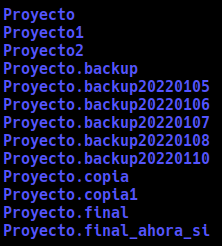
Gestión de cambios en un proyecto 2/2
- Solución 2: VCS tradicionales: RCS, CVS, Subversion
- Conexión con repositorio central para todo
- Solución 3: DVCS: Bazaar, Mercurial, Git
- Autonomía y flexibilidad
- Commits locales
Terminología 1/2
- Repositorio: Almacén local o remoto en donde se ecuentra un proyecto que está bajo
control de versiones.
- Va cambiando con el tiempo -> Versión
- Se conserva un histórico de todas las versiones anteriores
- Commit: Conjunto de cambios en un repositorio entre dos versiones
- A veces también se le puede llamar parche (patch)
Terminología 2/2
- Working tree - Untracked area
- La zona donde se trabaja, antes de "git add"
- Index - Staging area
- Despues de "git add", pero antes de "git commit"
Diferencias entre ficheros (consola)
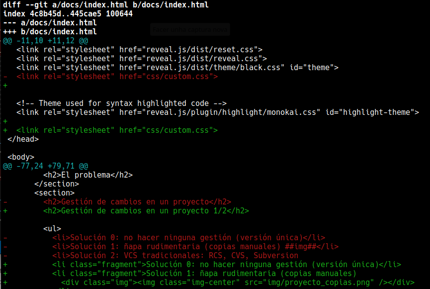
Diferencias entre ficheros (IDE)
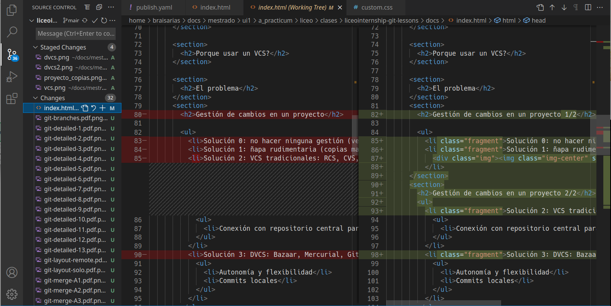
VCS vs DVCS 1/2
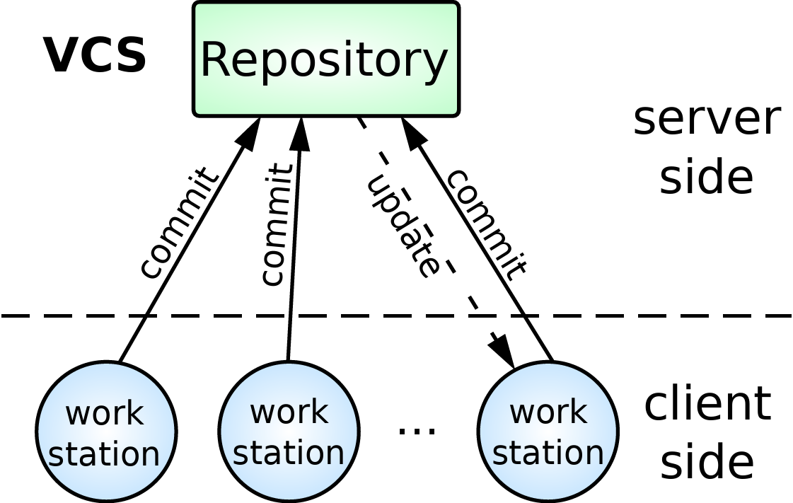
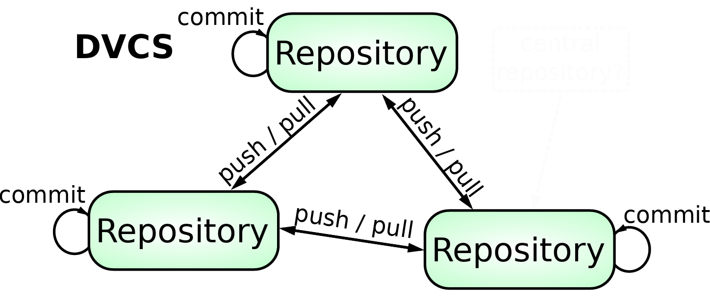
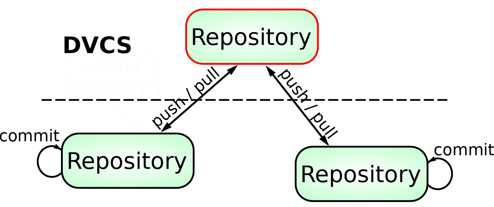
VCS vs DVCS 2/2
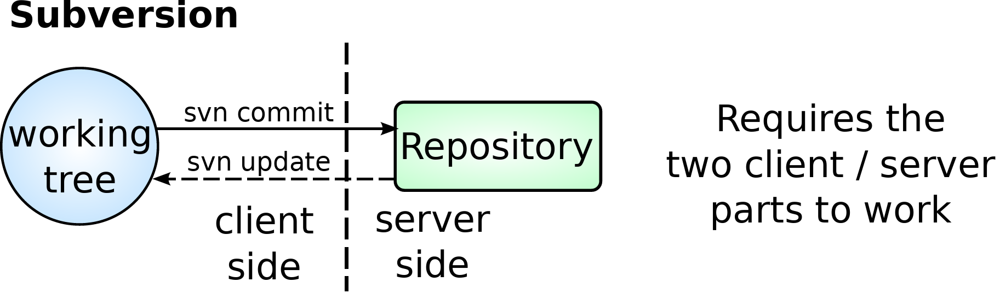
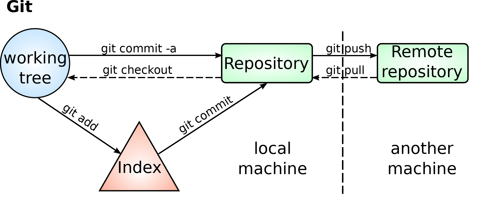
Flujo de trabajo con Git 1
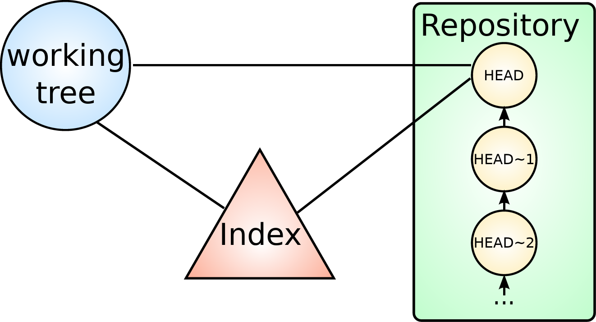
Flujo de trabajo con Git 2
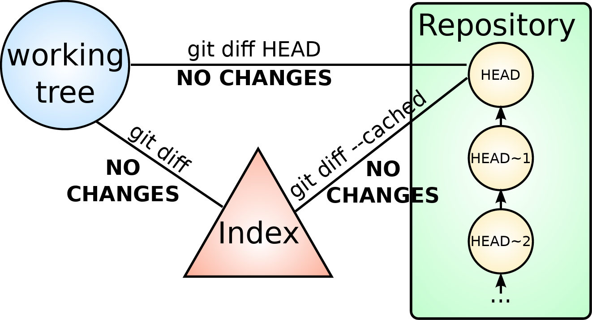
Flujo de trabajo con Git 3
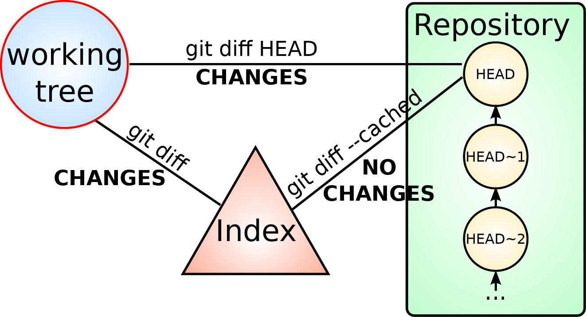
Flujo de trabajo con Git 4
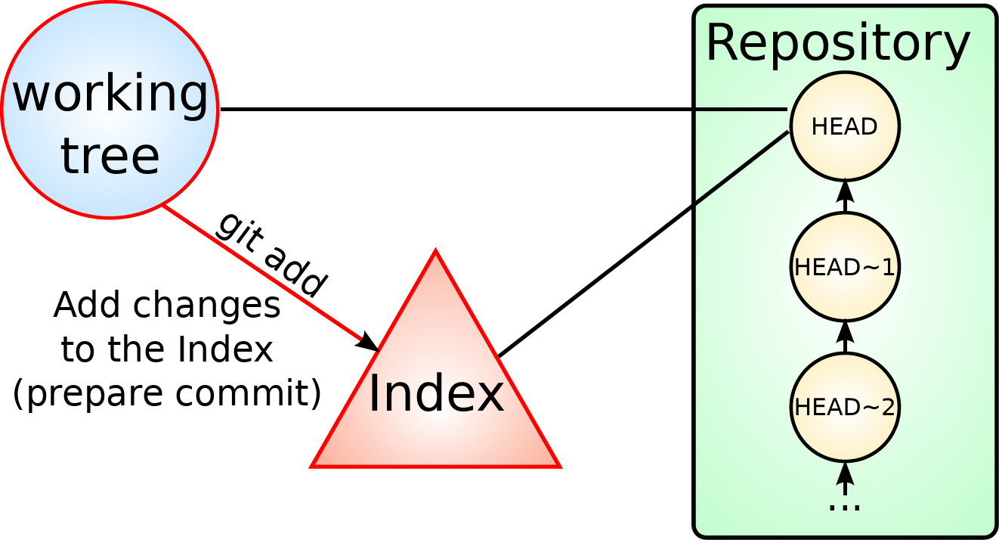
Flujo de trabajo con Git 5
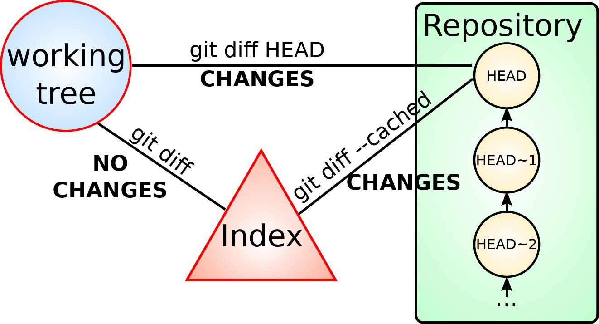
Flujo de trabajo con Git 6
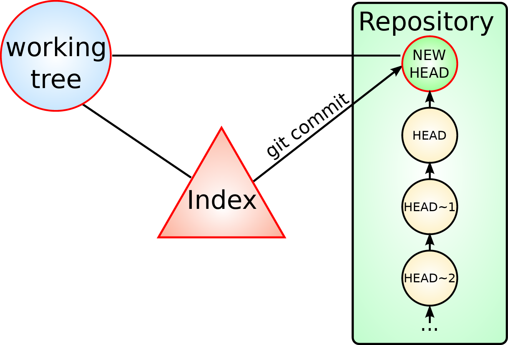
Flujo de trabajo con Git 7
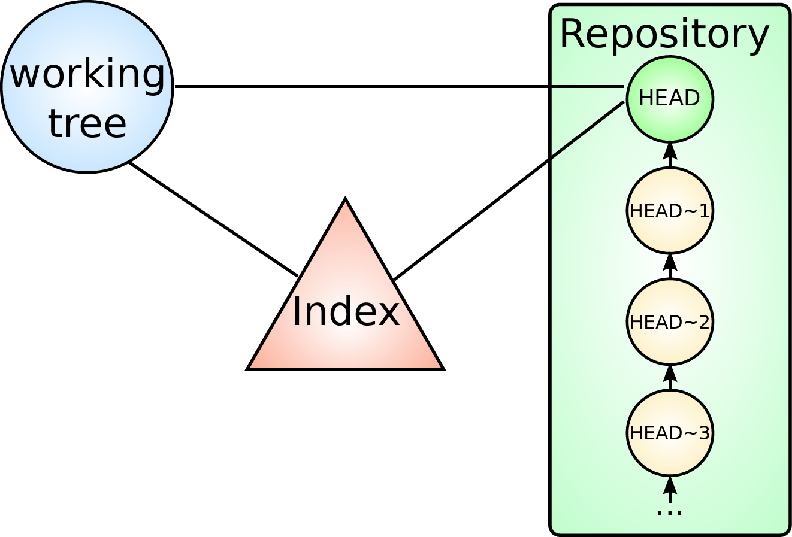
Flujo de trabajo con Git 8
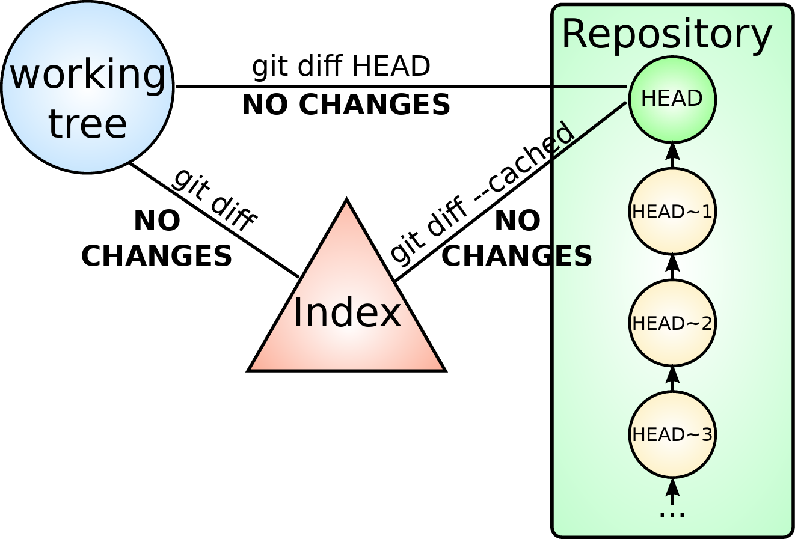
Flujo de trabajo con Git 9
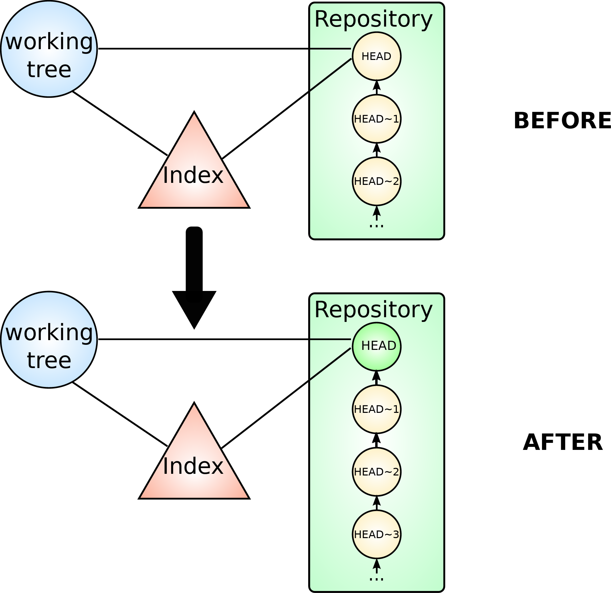
Comandos básicos de Git
- git init: Inicializa el directorio para trabajar con git
- git clone <URL>: Clona el repositorio remoto de la URL
- git add: Agrega cambios del Working tree al Index
- git commit: Consolida cambios del Index y creamos un nuevo commit
- git diff: Muestra cambios entre Working Tree y el Index
- git show <commit>: Muestra el commit commit
- git log: Muestra la historia de commits desde HEAD
Más comandos de Git
- git status: Muestra el estado del Working Tree y del Index
- git rm <fichero>: Borra el fichero y prepara los cambios para el commit en el Index
- git mv <ficheroA> <ficheroB>: Renombramos ficheroA como ficheroB y prepara los cambios para el commit
- git push: Envía los cambios locales a un repositorio remoto
- git pull: Trae los cambios de un repositorio remoto al local
Ejemplos
Creación de un proyecto de cero en GitHub
Licencias de software
- Licencias de Software Libre
- Licencias de Software Abierto
- Licencias de Software Propietario/Privativo
Software Libre
(4 libertades)
- Usar para cualquier proposito
- Ver el código fuente y modificarlo
- Distribuir copias
- Modificar el software y distribuir las modificaciones
Licencias
Copyleft
GPL
AGPL
EUPL
...
Copyleft suave
LGPL (Lesser General Public License)
MPL (Mozilla Public License)
...
Permisivas - sin copyleft
BSD
Apache
MIT/Expat
...
Introducción a Git y GitHub
Brais Arias Rio
(profesor en prácticas)
Liceo La Paz
https://braisarias.github.io/liceointernship-git-lessons/